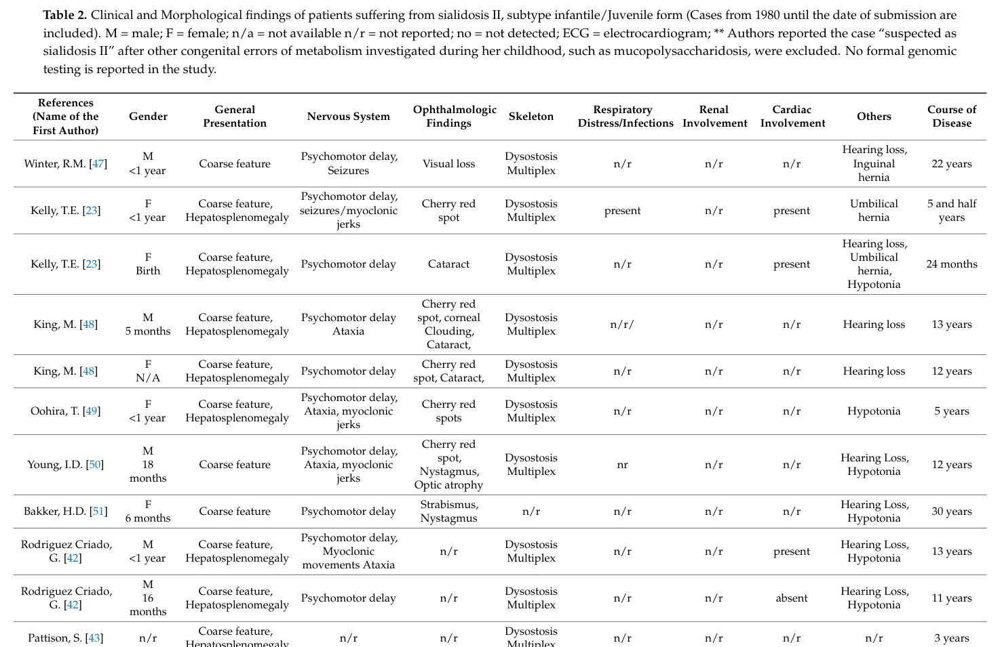

Juvenile sialidosis type 2 is the juvenile/childhood-onset subtype of sialidosis type II (the dysmorphic, severe form of sialidosis), an autosomal recessive lysosomal storage disorder caused by biallelic NEU1 variants that abolish lysosomal neuraminidase-1 (alpha-N-acetyl neuraminidase/sialidase). Enzyme deficiency impairs removal of terminal sialic acid from glycoconjugates, causing intracellular accumulation and urinary excretion of sialyloligosaccharides. The juvenile type 2 form presents in childhood with coarse/dysmorphic facies, dysostosis multiplex, hepatosplenomegaly, a macular cherry-red spot, and progressive neurological impairment.
Ask a research question about Juvenile Sialidosis Type 2. OpenScientist will conduct autonomous deep research using the Disorder Mechanisms Knowledge Base and PubMed literature (typically 10-30 minutes).
Do not include personal health information in your question. Questions and results are cached in your browser's local storage.
Conditions with similar clinical presentations that must be differentiated from Juvenile Sialidosis Type 2:
name: Juvenile Sialidosis Type 2
creation_date: "2026-06-13T00:00:00Z"
description: >-
Juvenile sialidosis type 2 is the juvenile/childhood-onset subtype of sialidosis type II
(the dysmorphic, severe form of sialidosis), an autosomal recessive lysosomal storage disorder
caused by biallelic NEU1 variants that abolish lysosomal neuraminidase-1 (alpha-N-acetyl
neuraminidase/sialidase). Enzyme deficiency impairs removal of terminal sialic acid from
glycoconjugates, causing intracellular accumulation and urinary excretion of
sialyloligosaccharides. The juvenile type 2 form presents in childhood with coarse/dysmorphic
facies, dysostosis multiplex, hepatosplenomegaly, a macular cherry-red spot, and progressive
neurological impairment.
category: Mendelian
disease_term:
preferred_term: juvenile sialidosis type 2
term:
id: MONDO:0019681
label: juvenile sialidosis type 2
mappings:
mondo_mappings:
- term:
id: MONDO:0019681
label: juvenile sialidosis type 2
mapping_predicate: skos:exactMatch
mapping_source: MONDO
mapping_justification: Primary MONDO disease identifier for this juvenile sialidosis type 2 entry.
synonyms:
- Sialidosis type 2, juvenile
- Dysmorphic sialidosis, juvenile
- Juvenile NEU1-related sialidosis
parents:
- Lysosomal Storage Disorder
pathophysiology:
- name: Neuraminidase-1 Deficiency
conforms_to: "lysosomal_substrate_accumulation#Lysosomal Hydrolase or Cofactor Deficiency"
description: >-
Biallelic NEU1 variants abolish lysosomal neuraminidase-1 (alpha-N-acetyl neuraminidase),
the sialidase that removes terminal sialic acid from sialoglycoconjugates. NEU1 normally acts
in a complex with the protective protein/cathepsin A.
gene:
preferred_term: NEU1
term:
id: hgnc:7758
label: NEU1
cell_types:
- preferred_term: fibroblast
term:
id: CL:0000057
label: fibroblast
evidence:
- reference: PMID:29693572
reference_title: "Sialidosis: A Review of Morphology and Molecular Biology of a Rare Pediatric Disorder."
supports: SUPPORT
evidence_source: HUMAN_CLINICAL
snippet: "caused by α-N-acetyl neuraminidase deficiency resulting from a mutation in\nthe neuraminidase gene (NEU1)"
explanation: "Sialidosis is caused by NEU1 (neuraminidase-1) deficiency."
- reference: PMID:26949572
reference_title: "Pathogenesis, Emerging therapeutic targets and Treatment in Sialidosis."
supports: SUPPORT
evidence_source: HUMAN_CLINICAL
snippet: "caused by mutations in the NEU1 gene, encoding the lysosomal sialidase NEU1"
explanation: "NEU1 encodes the lysosomal sialidase whose deficiency causes sialidosis."
downstream:
- target: Sialyloligosaccharide Lysosomal Accumulation
description: Loss of sialidase activity prevents desialylation, so sialylated substrates accumulate.
- name: Sialyloligosaccharide Lysosomal Accumulation
conforms_to: "lysosomal_substrate_accumulation#Lysosomal Substrate Accumulation"
description: >-
Without sialidase activity, sialylated oligosaccharides and glycopeptides accumulate in
lysosomes (and are excreted in urine), producing multisystem storage disease.
cell_types:
- preferred_term: fibroblast
term:
id: CL:0000057
label: fibroblast
cellular_components:
- preferred_term: lysosome
term:
id: GO:0005764
label: lysosome
biological_processes:
- preferred_term: oligosaccharide catabolic process
modifier: DECREASED
term:
id: GO:0009313
label: oligosaccharide catabolic process
evidence:
- reference: PMID:29693572
reference_title: "Sialidosis: A Review of Morphology and Molecular Biology of a Rare Pediatric Disorder."
supports: SUPPORT
evidence_source: HUMAN_CLINICAL
snippet: "This genetic alteration leads to abnormal intracellular accumulation as well as urinary excretion of"
explanation: "NEU1 deficiency causes intracellular accumulation and urinary excretion of sialyloligosaccharides."
phenotypes:
- name: Coarse facial features
description: Coarse/dysmorphic facies characteristic of the severe (type II) form.
phenotype_term:
preferred_term: Coarse facial features
term:
id: HP:0000280
label: Coarse facial features
evidence:
- reference: PMID:31956508
supports: SUPPORT
evidence_source: HUMAN_CLINICAL
snippet: "coarseness was identified in all patients, though to varying degrees"
explanation: Coarse facial features were present in all patients of the molecularly confirmed sialidosis type II cohort.
- name: Cherry red spot of the macula
description: A macular cherry-red spot, the hallmark ophthalmologic finding of sialidosis.
phenotype_term:
preferred_term: Cherry red spot of the macula
term:
id: HP:0010729
label: Cherry red spot of the macula
evidence:
- reference: PMID:31956508
supports: SUPPORT
evidence_source: HUMAN_CLINICAL
snippet: "The presence of a cherry-red spot is a well-established\nophthalmological clue to the disorder"
explanation: The macular cherry-red spot is the well-established ophthalmological hallmark of sialidosis.
- name: Intellectual disability
description: Progressive neurodevelopmental/intellectual impairment; the cognitive domain is most affected.
phenotype_term:
preferred_term: Intellectual disability
term:
id: HP:0001249
label: Intellectual disability
evidence:
- reference: PMID:31956508
supports: SUPPORT
evidence_source: HUMAN_CLINICAL
snippet: "The cognitive domain was found to be most affected, followed by speech, and fine and gross mot"
explanation: Cognitive (intellectual) impairment was the most affected domain in the sialidosis type II cohort.
- name: Dysostosis multiplex
description: >-
Dysostosis multiplex with vertebral deformities is a recurring skeletal feature in the
type II cohort (Arora et al. 2020); per-phenotype frequencies are tabulated in the full
text rather than the abstract.
phenotype_term:
preferred_term: Dysostosis multiplex
term:
id: HP:0000943
label: Dysostosis multiplex
evidence:
- reference: PMID:31956508
supports: SUPPORT
evidence_source: HUMAN_CLINICAL
snippet: "Dysostosis multiplex and kyphoscoliosis were the skeletal anomalies identified in this cohort"
explanation: Dysostosis multiplex was documented in the molecularly confirmed sialidosis type II cohort (Arora 2020); per-patient frequency is in the full-text tables.
- name: Short stature
description: >-
Short stature was present across the seven-patient type II cohort (Arora et al. 2020);
frequency data are in the full-text tables.
phenotype_term:
preferred_term: Short stature
term:
id: HP:0004322
label: Short stature
evidence:
- reference: PMID:31956508
supports: SUPPORT
evidence_source: HUMAN_CLINICAL
snippet: "Short stature+++++++++7/7"
explanation: Short stature was present across the molecularly confirmed sialidosis type II cohort (Arora 2020); per-patient frequency is in the full-text tables.
- name: Scoliosis
description: >-
Scoliosis/kyphoscoliosis is a common skeletal finding in sialidosis type II (Arora et al.
2020); full-text frequency data only.
phenotype_term:
preferred_term: Scoliosis
term:
id: HP:0002650
label: Scoliosis
evidence:
- reference: PMID:31956508
supports: SUPPORT
evidence_source: HUMAN_CLINICAL
snippet: "Scoliosis−+−+−+Mild+5/7"
explanation: Scoliosis was documented in the molecularly confirmed sialidosis type II cohort (Arora 2020); per-patient frequency is in the full-text tables.
- name: Hepatomegaly
description: >-
Hepatomegaly/visceromegaly reflects visceral storage and is recurrent in the type II
cohort (Arora et al. 2020); full-text frequency data only.
phenotype_term:
preferred_term: Hepatomegaly
term:
id: HP:0002240
label: Hepatomegaly
evidence:
- reference: PMID:31956508
supports: SUPPORT
evidence_source: HUMAN_CLINICAL
snippet: "Hepatomegaly was present in patients 2,3,4, and 6"
explanation: Hepatomegaly was documented in the molecularly confirmed sialidosis type II cohort (Arora 2020); per-patient frequency is in the full-text tables.
- name: Sensorineural hearing loss
description: >-
Sensorineural hearing loss is reported in a subset of sialidosis type II patients (Arora
et al. 2020); full-text frequency data only.
phenotype_term:
preferred_term: Sensorineural hearing impairment
term:
id: HP:0000407
label: Sensorineural hearing impairment
evidence:
- reference: PMID:31956508
supports: SUPPORT
evidence_source: HUMAN_CLINICAL
snippet: "HL was present in four out of seven patients"
explanation: Sensorineural hearing loss was documented in the molecularly confirmed sialidosis type II cohort (Arora 2020); per-patient frequency is in the full-text tables.
- name: Seizures
description: >-
Seizures occur in a subset of sialidosis type II patients (Arora et al. 2020); full-text
frequency data only.
phenotype_term:
preferred_term: Seizure
term:
id: HP:0001250
label: Seizure
evidence:
- reference: PMID:31956508
supports: SUPPORT
evidence_source: HUMAN_CLINICAL
snippet: "Presenting complaints included developmental delay with coarse facies in 6/7 patients with seizures (P2, P4)"
explanation: Seizures were documented in the molecularly confirmed sialidosis type II cohort (Arora 2020); per-patient frequency is in the full-text tables.
- name: Ataxia
description: >-
Cerebellar ataxia is part of the progressive neurological phenotype (Arora et al. 2020);
full-text frequency data only.
phenotype_term:
preferred_term: Ataxia
term:
id: HP:0001251
label: Ataxia
evidence:
- reference: PMID:31956508
supports: SUPPORT
evidence_source: HUMAN_CLINICAL
snippet: "Patients 1 and 4 had ataxia. On examination, the cerebellar signs were present"
explanation: Ataxia was documented in the molecularly confirmed sialidosis type II cohort (Arora 2020); per-patient frequency is in the full-text tables.
- name: Myoclonus
description: Myoclonus / myoclonic seizures, the hallmark of the cherry-red-spot myoclonus spectrum of sialidosis.
phenotype_term:
preferred_term: Myoclonus
term:
id: HP:0001336
label: Myoclonus
evidence:
- reference: PMID:31956508
supports: SUPPORT
evidence_source: HUMAN_CLINICAL
snippet: "overlapping features with those in the current cohort of type II sialidosis including myoclonic seizures"
explanation: Myoclonic seizures (myoclonus) are part of the cherry-red-spot myoclonus phenotype documented in this type II cohort.
biochemical:
- name: Urinary sialyloligosaccharides
presence: INCREASED
context: Increased urinary excretion of sialyloligosaccharides is a diagnostic biochemical marker.
evidence:
- reference: PMID:29693572
reference_title: "Sialidosis: A Review of Morphology and Molecular Biology of a Rare Pediatric Disorder."
supports: SUPPORT
evidence_source: HUMAN_CLINICAL
snippet: "This genetic alteration leads to abnormal intracellular accumulation as well as urinary excretion of"
explanation: "Urinary sialyloligosaccharide excretion is a biochemical hallmark."
inheritance:
- name: Autosomal recessive
inheritance_term:
preferred_term: Autosomal recessive inheritance
term:
id: HP:0000007
label: Autosomal recessive inheritance
evidence:
- reference: PMID:29693572
reference_title: "Sialidosis: A Review of Morphology and Molecular Biology of a Rare Pediatric Disorder."
supports: SUPPORT
evidence_source: HUMAN_CLINICAL
snippet: "Sialidosis (MIM 256550) is a rare, autosomal recessive inherited disorder"
explanation: "Sialidosis is autosomal recessive."
genetic:
- name: NEU1
association: Biallelic NEU1 variants abolishing lysosomal neuraminidase-1
relationship_type: CAUSATIVE
variant_origin: GERMLINE
gene_term:
preferred_term: NEU1
term:
id: hgnc:7758
label: NEU1
evidence:
- reference: PMID:29693572
reference_title: "Sialidosis: A Review of Morphology and Molecular Biology of a Rare Pediatric Disorder."
supports: SUPPORT
evidence_source: HUMAN_CLINICAL
snippet: "caused by α-N-acetyl neuraminidase deficiency resulting from a mutation in\nthe neuraminidase gene (NEU1)"
explanation: "NEU1 mutations cause sialidosis."
- reference: PMID:31956508
reference_title: "Sialidosis type II: Expansion of phenotypic spectrum and identification of a common mutation in seven patients."
supports: SUPPORT
evidence_source: HUMAN_CLINICAL
snippet: "All seven phenotypically heterogeneous patients had the same pathogenic variant (c.679G > A; p.Gly227Arg) at a homozygous level in the NEU1 gene"
explanation: "A recurrent homozygous NEU1 variant (c.679G>A, p.Gly227Arg) was identified across the largest reported type II cohort, proposed as a north Indian founder variant."
diagnosis:
- name: Urinary oligosaccharides and NEU1 sequencing
diagnosis_term:
preferred_term: clinical laboratory procedure
term:
id: MAXO:0000006
label: clinical laboratory procedure
description: >-
Increased urinary sialyloligosaccharides and deficient neuraminidase activity suggest the
diagnosis, which is confirmed by NEU1 sequencing.
markers: Elevated urinary sialyloligosaccharides; deficient neuraminidase activity.
evidence:
- reference: PMID:29693572
reference_title: "Sialidosis: A Review of Morphology and Molecular Biology of a Rare Pediatric Disorder."
supports: SUPPORT
evidence_source: HUMAN_CLINICAL
snippet: "A definitive diagnosis is made after the identification\nof a mutation in the NEU1 gene."
explanation: "Definitive diagnosis requires NEU1 sequencing."
treatments:
- name: Supportive Care
description: >-
No curative therapy is established; management is supportive while gene-therapy strategies are
advancing preclinically.
treatment_term:
preferred_term: supportive care
term:
id: MAXO:0000950
label: supportive care
differential_diagnoses:
- name: Galactosialidosis
description: >-
Combined neuraminidase and beta-galactosidase deficiency from cathepsin A (CTSA) deficiency,
which secondarily destabilizes NEU1, producing an overlapping phenotype.
disease_term:
preferred_term: galactosialidosis
term:
id: MONDO:0009737
label: galactosialidosis
distinguishing_features:
- Primary CTSA (cathepsin A) deficiency with secondary combined NEU1 and beta-galactosidase deficiency, versus primary NEU1 deficiency in sialidosis.
evidence:
- reference: PMID:26949572
reference_title: "Pathogenesis, Emerging therapeutic targets and Treatment in Sialidosis."
supports: SUPPORT
evidence_source: HUMAN_CLINICAL
snippet: "NEU1 requirement to complex with the\nprotective protein/cathepsin A for stability and activation"
explanation: "NEU1 depends on cathepsin A; CTSA deficiency causes galactosialidosis with secondary NEU1 loss."
definitions:
- name: Clinical case definition of juvenile sialidosis type 2
definition_type: CASE_DEFINITION
description: >-
Juvenile sialidosis type 2 is the juvenile-onset dysmorphic (type II) form of NEU1-related
sialidosis, defined by biallelic NEU1 variants with neuraminidase deficiency,
sialyloligosaccharide accumulation, coarse facies, and a macular cherry-red spot.
scope: Disease-level case definition for juvenile sialidosis type 2.
evidence:
- reference: PMID:29693572
reference_title: "Sialidosis: A Review of Morphology and Molecular Biology of a Rare Pediatric Disorder."
supports: SUPPORT
evidence_source: HUMAN_CLINICAL
snippet: "sialidosis type II (dysmorphic or severe form)"
explanation: "Anchors the case definition in the dysmorphic (type II) form of sialidosis."
Question: You are an expert researcher providing comprehensive, well-cited information.
Provide detailed information focusing on: 1. Key concepts and definitions with current understanding 2. Recent developments and latest research (prioritize 2023-2024 sources) 3. Current applications and real-world implementations 4. Expert opinions and analysis from authoritative sources 5. Relevant statistics and data from recent studies
Format as a comprehensive research report with proper citations. Include URLs and publication dates where available. Always prioritize recent, authoritative sources and provide specific citations for all major claims.
Please provide a comprehensive research report on Juvenile Sialidosis Type 2 covering all of the disease characteristics listed below. This report will be used to populate a disease knowledge base entry. Be thorough and cite primary literature (PMID preferred) for all claims.
For each section, suggested databases/resources are listed. These are the first places you should search for information on each topic.
Search first: OMIM, Orphanet, ICD-10/ICD-11, MeSH, PubMed
Search first: PubMed, Cochrane Library, UpToDate, clinical guidelines, ClinVar, ClinGen, GWAS Catalog, PheGenI, CTD, CDC, WHO, epidemiological databases
Search first: PubMed, Cochrane Library, clinical trial databases, GWAS Catalog, gnomAD, WHO, CDC, nutrition databases
Search first: CTD, PubMed, PheGenI, GxE databases
Search first: HPO (Human Phenotype Ontology), OMIM, Orphanet, PubMed, clinicaltrials.gov, MedDRA, SNOMED CT, DECIPHER, LOINC
For each phenotype, provide: - Phenotype type: symptoms, clinical signs, physical manifestations, behavioral changes, or laboratory abnormalities
For symptoms/signs: HPO, OMIM, Orphanet, PubMed For behavioral changes: HPO, DSM, RDoC (Research Domain Criteria), PubMed For laboratory abnormalities: LOINC, SNOMED CT, LabTests Online, PubMed - Phenotype characteristics: Search first: OMIM, Orphanet, HPO, PubMed - Age of symptom onset (neonatal, childhood, adult-onset, late-onset) - Symptom severity (mild, moderate, severe, variable) - Symptom progression (stable, progressive, episodic, fluctuating) - Frequency among affected individuals (percentage or qualitative) - Quality of life impact: Effects on daily functioning and well-being (per-phenotype when possible) Search first: EQ-5D database, SF-36, WHO QOL databases, PubMed - Suggest HPO (Human Phenotype Ontology) terms for each phenotype
Search first: OMIM, ClinVar, HGMD, Ensembl, NCBI Gene
Search first: ENCODE, Roadmap Epigenomics, MethBase, DiseaseMeth
Search first: DECIPHER, ClinVar, ECARUCA, UCSC Genome Browser
Search first: CTD (Comparative Toxicogenomics Database), TOXNET, PubMed, EPA databases
Search first: CDC databases, WHO, PubMed, NHANES
Search first: NCBI Taxonomy, ViPR, BV-BRC, MicrobeDB, GIDEON
Search first: KEGG, Reactome, WikiPathways, PathBank, BioCyc
Search first: Gene Ontology (GO), Reactome, KEGG, PubMed
Search first: UniProt, PDB (Protein Data Bank), InterPro, Pfam, AlphaFold
Search first: KEGG, BioCyc, HMDB (Human Metabolome Database), BRENDA
Search first: ImmPort, Immunome Database, IEDB, Gene Ontology
Search first: PubMed, Gene Ontology, Reactome
Search first: BRENDA, UniProt, KEGG, OMIM, PubMed
Search first: ENCODE, Roadmap Epigenomics, MethBase, DiseaseMeth
For each mechanism, describe: - The causal chain from initial trigger to clinical manifestation - Which mechanisms are upstream vs downstream - What cell types and biological processes are involved - Suggest GO terms for biological processes and CL terms for cell types
Search first: Uberon, FMA (Foundational Model of Anatomy), OMIM, HPO, ICD-11, MeSH, SNOMED CT
Search first: Uberon, Human Protein Atlas, Cell Ontology, Human Cell Atlas, CellMarker, PanglaoDB
Search first: Gene Ontology (Cellular Component), UniProt, Human Protein Atlas
Search first: OMIM, Orphanet, HPO, PubMed
Search first: Disease registries, longitudinal cohort databases, natural history studies, PubMed, Orphanet, OMIM
Search first: Orphanet, CDC, WHO, GBD (Global Burden of Disease), national registries, SEER, disease registries
Search first: GTR (Genetic Testing Registry), GeneReviews, ClinGen
For each treatment, suggest MAXO (Medical Action Ontology) terms where applicable.
Search first: CDC vaccine schedules, WHO immunization, FDA vaccine database
Search first: CDC, WHO, behavioral intervention databases, Cochrane Library
Search first: NSGC resources, ACMG guidelines, GeneReviews
Search first: Clinical guidelines, FDA approvals, PubMed
Search first: NCBI Taxonomy
Search first: VBO (Vertebrate Breed Ontology)
Search first: NCBI Gene
Structure your response as a comprehensive narrative organized by the sections above. For each section, provide: - Factual content with specific details (numbers, percentages, gene names, variant nomenclature) - Ontology term suggestions (HPO, GO, CL, UBERON, CHEBI, MAXO, MONDO) where applicable - Evidence citations with PMIDs - Direct quotes from abstracts to support key claims - Clear indication when information is not available or not applicable for this disease
This report will be used to populate a disease knowledge base entry with: - Pathophysiology descriptions with causal chains - Gene/protein annotations (HGNC, GO terms) - Phenotype associations (HP terms) with frequencies - Cell type involvement (CL terms) - Anatomical locations (UBERON terms) - Chemical entities (CHEBI terms) - Treatment annotations (MAXO terms) - Evidence items with PMIDs and exact abstract quotes - Epidemiology, prognosis, diagnostic, and prevention information - Animal model descriptions with phenotype recapitulation details
Juvenile sialidosis type II is the juvenile/childhood-onset subtype of sialidosis type II, a severe neuropathic autosomal recessive lysosomal storage disorder caused by biallelic pathogenic variants in NEU1 (neuraminidase 1; lysosomal sialidase/α-neuraminidase). It is clinically characterized by a mucopolysaccharidosis-like, multisystem phenotype including coarse/dysmorphic facies, visceromegaly (hepatosplenomegaly), skeletal dysplasia/dysostosis multiplex, neurodevelopmental impairment, and frequently macular cherry-red spots; a subset develop nephrosialidosis (nephrotic syndrome/fulminant glomerulopathy). There is no established curative therapy in clinical practice; management is supportive while multiple preclinical gene-therapy and other disease-modifying strategies are advancing in mouse models. (d’azzo2015pathogenesisemergingtherapeutic pages 3-4, kho2023severekidneydysfunction pages 1-2, khan2018sialidosisareview pages 5-7, vlekkert2024aavmediatedgenetherapy pages 1-5)
| Category | Item | Summary | Evidence |
|---|---|---|---|
| Disease identity | Preferred label | Juvenile sialidosis type II = juvenile/childhood-onset subtype of severe neuropathic sialidosis type II, an ultra-rare lysosomal storage disorder caused by NEU1 deficiency | (d’azzo2015pathogenesisemergingtherapeutic pages 3-4, kho2023severekidneydysfunction pages 1-2) |
| Disease identity | Identifiers | MONDO: sialidosis type 2 = MONDO_0009738; Orphanet: sialidosis type II = Orphanet_87876; OMIM: sialidosis = #256550 | (OpenTargets Search: sialidosis-NEU1, kho2023severekidneydysfunction pages 1-2) |
| Disease identity | Synonyms/classification | Type II sialidosis; dysmorphic/severe sialidosis; type II is subdivided into congenital, infantile, juvenile forms | (khan2018sialidosisareview pages 3-5, d’azzo2015pathogenesisemergingtherapeutic pages 3-4, khan2018sialidosisareview pages 1-3) |
| Genetics | Causal gene | NEU1 (neuraminidase 1); lysosomal sialidase/α-neuraminidase deficiency | (d’azzo2015pathogenesisemergingtherapeutic pages 3-4, khan2018sialidosisareview pages 1-3) |
| Genetics | Inheritance | Autosomal recessive | (khan2018sialidosisareview pages 11-13, d’azzo2015pathogenesisemergingtherapeutic pages 1-3, aravindhan2018childneurologytype pages 1-2) |
| Temporal definition | Juvenile onset | Juvenile type II onset is defined as after age 2 years; another review gives juvenile range as ~2–20 years | (khan2018sialidosisareview pages 3-5, d’azzo2015pathogenesisemergingtherapeutic pages 3-4, d’azzo2015pathogenesisemergingtherapeutic pages 1-3) |
| Mechanism | Core pathobiology | NEU1 deficiency impairs degradation of sialylated glycoproteins/oligosaccharides, causing lysosomal storage and urinary excretion of oversialylated metabolites | (kho2023severekidneydysfunction pages 1-2, d’azzo2015pathogenesisemergingtherapeutic pages 1-3) |
| Mechanism | NEU1-PPCA/CTSA complex | NEU1 requires the protective protein/cathepsin A (PPCA/CTSA) in a multienzyme complex for lysosomal targeting, stability, and catalytic activation; some pathogenic variants disrupt NEU1-PPCA interaction | (d’azzo2015pathogenesisemergingtherapeutic pages 3-4, khan2018sialidosisareview pages 1-3) |
| Genotype-phenotype | Variant classes | Severe type II often involves catalytically inactive variants; biochemically, variants may be mislocalized/inactive, lysosome-localized but inactive, or retain residual activity | (khan2018sialidosisareview pages 3-5) |
| Clinical features | Visceromegaly | Hepatosplenomegaly/visceromegaly is a characteristic recurrent feature | (khan2018sialidosisareview pages 5-7, d’azzo2015pathogenesisemergingtherapeutic pages 3-4, arora2020sialidosistypeii pages 2-3) |
| Clinical features | Skeletal disease | Dysostosis multiplex, vertebral deformities, scoliosis, short stature, kyphoscoliosis are common/recurring findings | (khan2018sialidosisareview pages 5-7, d’azzo2015pathogenesisemergingtherapeutic pages 3-4, arora2020sialidosistypeii pages 2-3, arora2020sialidosistypeii pages 3-5) |
| Clinical features | Dysmorphism | Coarse facies/dysmorphic facial features are characteristic; reported details include hypertelorism, broad depressed nasal bridge, prominent philtrum, prognathism | (khan2018sialidosisareview pages 5-7, arora2020sialidosistypeii pages 3-5) |
| Clinical features | Neurodevelopment | Global developmental delay/intellectual and adaptive impairment are central juvenile type II manifestations; cognitive, speech, and motor domains can all be affected | (d’azzo2015pathogenesisemergingtherapeutic pages 3-4, kho2023severekidneydysfunction pages 1-2, arora2020sialidosistypeii pages 1-2) |
| Clinical features | Ophthalmology | Cherry-red macular spots are classic; other findings include cataract, corneal clouding, nystagmus, strabismus; rare bull's-eye maculopathy reported | (khan2018sialidosisareview pages 5-7, d’azzo2015pathogenesisemergingtherapeutic pages 3-4, arora2020sialidosistypeii pages 2-3, arora2020sialidosistypeii pages 3-5) |
| Clinical features | Hearing loss | Hearing loss is recurrent in juvenile/infantile type II cohorts | (d’azzo2015pathogenesisemergingtherapeutic pages 3-4, arora2020sialidosistypeii pages 2-3) |
| Clinical features | Renal involvement | A subset develop nephrosialidosis with nephrotic syndrome/fulminant glomerulopathy, podocyte vacuolization, proteinuria, renal failure | (kho2023severekidneydysfunction pages 1-2, kho2023severekidneydysfunction pages 2-3, maroofian2018parentalwholeexomesequencing pages 3-5, maroofian2018parentalwholeexomesequencing pages 1-2) |
| Epidemiology | Frequency | Ultra-rare; reported prevalence for sialidosis overall is <1/1,000,000 live births; type II-specific incidence not established in retrieved sources | (kho2023severekidneydysfunction pages 1-2) |
| Cohort statistic | Seven-patient series | In a 7-patient type II series from North India: developmental delay 7/7, coarse facies 7/7, short stature 7/7, cherry-red spot 6/7, hearing loss 4/7, dysostosis 4/7, hepatomegaly 4/7, scoliosis 5/7, seizures 2/7 | (arora2020sialidosistypeii pages 2-3) |
| Cohort statistic | Nephrosialidosis literature | One 2018 review noted only 16 prior nephrosialidosis cases, 14 deceased; hepatomegaly in nearly all, classic ocular signs in roughly half | (maroofian2018parentalwholeexomesequencing pages 1-2) |
| Genotype example | Common cohort variant | NEU1 c.679G>A (p.Gly227Arg) was homozygous in all 7 patients of one North Indian type II cohort; proposed common/founder mutation with pre-lysosomal retention and absent effective lysosomal activity | (arora2020sialidosistypeii pages 2-3, arora2020sialidosistypeii pages 3-5) |
| Key sources | Reviews and case series | 2015 Expert Opin Orphan Drugs review DOI: 10.1517/21678707.2015.1025746; 2018 Diagnostics review DOI: 10.3390/diagnostics8020029; 2020 Mol Genet Metab Rep DOI: 10.1016/j.ymgmr.2019.100561; 2023 JCI Insight DOI: 10.1172/jci.insight.166470; 2018 Kidney Int Rep DOI: 10.1016/j.ekir.2018.07.015 | (d’azzo2015pathogenesisemergingtherapeutic pages 3-4, khan2018sialidosisareview pages 5-7, arora2020sialidosistypeii pages 2-3, kho2023severekidneydysfunction pages 1-2, maroofian2018parentalwholeexomesequencing pages 3-5) |
| Study | Status | Sponsor | Start date | Purpose | Key outcomes collected | Evidence |
|---|---|---|---|---|---|---|
| NCT00029965 — Natural History of Glycosphingolipid Storage Disorders and Glycoprotein Disorders | Recruiting | National Human Genome Research Institute (NHGRI) | 2002-02-06 | Characterize progression of glycoprotein/glycosphingolipid disorders including sialidosis; develop monitoring tools and biomarkers for future trials | Serial natural history assessments every ~1–2 years; blood/CSF/urine biomarkers; MRI/MRS, EEG, ophthalmology, gait analysis; fibroblasts/iPSC | (NCT00029965 chunk 1) |
| NCT01891422 — Longitudinal Studies of the Glycoproteinoses | Completed | Greenwood Genetic Center | 2009-08 | Define disease frequency and progression in glycoproteinoses including sialidosis; identify early diagnostic features, assess supportive therapies, and genotype-phenotype correlations | Change in disease characteristics over time (baseline through Years 1–4); molecular/biochemical confirmation; blood and urine metabolic/genetic testing; retained biospecimens | (NCT01891422 chunk 1) |
Table: This table condenses the key identifiers, genetics, age-of-onset definition, hallmark clinical features, and high-yield evidence for juvenile sialidosis type II, plus two relevant observational natural-history studies. It is useful as a quick-reference scaffold for disease knowledge base curation and evidence tracing.
Sialidosis is a lysosomal storage disease due to deficient neuraminidase-1 (NEU1) activity leading to impaired degradation of sialylated substrates and lysosomal storage. It is classically divided into type I (attenuated) and type II (severe neuropathic), with type II further subdivided into congenital, infantile, and juvenile forms based on age of onset. (khan2018sialidosisareview pages 3-5, d’azzo2015pathogenesisemergingtherapeutic pages 3-4, khan2018sialidosisareview pages 1-3)
Juvenile sialidosis type II is defined as the type II subtype with onset after age 2 years; one review operationalizes juvenile onset as approximately 2–20 years. (d’azzo2015pathogenesisemergingtherapeutic pages 3-4, khan2018sialidosisareview pages 3-5)
ICD-10/ICD-11 and MeSH identifiers were not found in the retrieved full-text evidence set; these would require additional targeted retrieval from ICD/MeSH catalogs or OMIM/Orphanet pages beyond the current corpus.
Within the retrieved literature, type II is repeatedly described as the “dysmorphic/severe” form of sialidosis and as severe neuropathic sialidosis, with subtypes congenital/hydropic, infantile, and juvenile. (khan2018sialidosisareview pages 1-3, d’azzo2015pathogenesisemergingtherapeutic pages 3-4)
The disease characterization in this report is derived from: * Aggregated disease-level resources / reviews (e.g., mechanistic/clinical reviews). (d’azzo2015pathogenesisemergingtherapeutic pages 3-4, khan2018sialidosisareview pages 1-3) * Human case series and case reports (including molecularly confirmed sialidosis type II, nephrosialidosis). (arora2020sialidosistypeii pages 2-3, maroofian2018parentalwholeexomesequencing pages 3-5) * Model organism studies (Neu1-deficient mice; pathophysiology and therapy testing). (kho2023severekidneydysfunction pages 1-2, vlekkert2024aavmediatedgenetherapy pages 1-5) * ClinicalTrials.gov observational natural-history cohorts. (NCT00029965 chunk 1, NCT01891422 chunk 1)
Primary cause: biallelic pathogenic variants in NEU1 cause neuraminidase-1 deficiency and consequent lysosomal storage. Sialidosis is described as autosomal recessive. (d’azzo2015pathogenesisemergingtherapeutic pages 1-3, khan2018sialidosisareview pages 1-3, kho2023severekidneydysfunction pages 1-2)
Mechanistic cause: loss of NEU1 function impairs the processing/degradation of sialylated glycoproteins/oligosaccharides, leading to accumulation of oversialylated metabolites and lysosomal dysfunction. (d’azzo2015pathogenesisemergingtherapeutic pages 1-3, kho2023severekidneydysfunction pages 1-2)
For this Mendelian condition, the primary risk factor is inheritance of pathogenic NEU1 variants (carrier parents). Consanguinity was present in some families in a 7-patient type II cohort. (arora2020sialidosistypeii pages 2-3)
No environmental, infectious, or lifestyle risk factors were identified in the retrieved corpus as causally contributing to juvenile sialidosis type II.
No established protective genetic variants or environmental protective factors for sialidosis type II were identified in the retrieved evidence.
No gene–environment interactions were identified in the retrieved evidence.
Reviews describe the infantile/juvenile type II phenotype as mucopolysaccharidosis-like, with characteristic features including coarse facies, visceromegaly, dysostosis multiplex/vertebral deformities, and neurodevelopmental impairment, and frequent ocular findings such as cherry-red spots. (khan2018sialidosisareview pages 5-7, d’azzo2015pathogenesisemergingtherapeutic pages 3-4)
A curated cross-case summary table of infantile/juvenile type II findings is provided as Table 2 in Khan & Sergi (Diagnostics, 2018), documenting recurrent neurologic, ocular, visceral, and skeletal findings across historical cases. (khan2018sialidosisareview media 418082c6, khan2018sialidosisareview media 2b732cec)
A 7-patient molecularly confirmed type II cohort reported frequencies including: developmental delay 7/7, coarse facies 7/7, short stature 7/7, cherry-red spot 6/7, hearing loss 4/7, dysostosis 4/7, hepatomegaly 4/7, scoliosis 5/7, seizures 2/7, ataxia 2/7. (arora2020sialidosistypeii pages 2-3)
A subset of severe type II patients develop nephrosialidosis, described as abrupt-onset fulminant glomerular nephropathy/nephrotic syndrome with podocyte pathology. (kho2023severekidneydysfunction pages 1-2, kho2023severekidneydysfunction pages 2-3)
A nephrosialidosis case report/review highlights: proteinuria often beginning around ages 2–3 years, renal histology including focal segmental glomerulosclerosis with vacuolated cells, frequent lack of steroid responsiveness, and high mortality in reported cases (14/16 deceased in the review’s historical set). (maroofian2018parentalwholeexomesequencing pages 1-2)
Based on reported recurring manifestations in juvenile/infantile type II: * Coarse facial features (HP:0000280) (khan2018sialidosisareview pages 5-7, arora2020sialidosistypeii pages 3-5) * Hepatosplenomegaly (HP:0001433) / Hepatomegaly (HP:0002240) / Splenomegaly (HP:0001744) (d’azzo2015pathogenesisemergingtherapeutic pages 3-4, arora2020sialidosistypeii pages 2-3) * Dysostosis multiplex (HP:0002755) / Scoliosis (HP:0002650) / Short stature (HP:0004322) (d’azzo2015pathogenesisemergingtherapeutic pages 3-4, arora2020sialidosistypeii pages 2-3) * Global developmental delay (HP:0001263) / Intellectual disability (HP:0001249) (d’azzo2015pathogenesisemergingtherapeutic pages 3-4, arora2020sialidosistypeii pages 1-2) * Cherry-red spot of the macula (HP:0010707) / Cataract (HP:0000518) / Corneal clouding (HP:0007957) (khan2018sialidosisareview pages 5-7, arora2020sialidosistypeii pages 2-3) * Sensorineural hearing impairment (HP:0000407) (arora2020sialidosistypeii pages 2-3) * Myoclonus (HP:0001336) / Seizures (HP:0001250) / Ataxia (HP:0001251) (d’azzo2015pathogenesisemergingtherapeutic pages 3-4, arora2020sialidosistypeii pages 2-3) * Nephrotic syndrome (HP:0000100) / Proteinuria (HP:0000093) (maroofian2018parentalwholeexomesequencing pages 3-5, maroofian2018parentalwholeexomesequencing pages 1-2)
Formal disease-specific QoL instrument data were not found in the retrieved corpus. However, the combination of neurodevelopmental disability, progressive vision impairment, skeletal disease, and potential renal failure implies substantial functional impairment and caregiver burden. This remains an evidence gap in the current retrieved set.
Autosomal recessive (homozygous or compound heterozygous NEU1 pathogenic variants). (aravindhan2018childneurologytype pages 1-2, d’azzo2015pathogenesisemergingtherapeutic pages 1-3)
A review describes a genotype–phenotype correlation: age of onset and clinical severity parallel residual neuraminidase activity, and NEU1 mutants can be grouped into biochemical classes: (1) inactive/mislocalized, (2) lysosome-localized but inactive, and (3) lysosome-localized with residual activity. (khan2018sialidosisareview pages 3-5)
Example of a recurrent variant in a type II cohort: In a 7-patient North Indian cohort, all probands were homozygous for NEU1 c.679G>A (p.Gly227Arg), proposed as a common/founder mutation; the paper reports predicted misfolding and pre-lysosomal retention with impaired lysosomal targeting and enzyme activity. (arora2020sialidosistypeii pages 2-3, arora2020sialidosistypeii pages 3-5)
Example in nephrosialidosis: A nephrosialidosis case was reported with a homozygous NEU1 change (reported as c.1109A/G), identified via parental WES and segregating with disease. (maroofian2018parentalwholeexomesequencing pages 3-5)
Population allele-frequency metrics for specific pathogenic type II variants were not available in the retrieved corpus. A separate NEU1 3’UTR variant is common in gnomAD (3–16% across populations) and associated with lower GFR in GWAS, but this is not evidence for causation of sialidosis. (kho2023severekidneydysfunction pages 1-2)
No established modifier genes, epigenetic signatures, or chromosomal abnormalities were identified in the retrieved evidence.
No environmental, lifestyle, toxicant, or infectious triggers were identified as contributing causes in the retrieved evidence. Juvenile sialidosis type II is best supported as a primarily genetic lysosomal storage disease. (d’azzo2015pathogenesisemergingtherapeutic pages 1-3, kho2023severekidneydysfunction pages 1-2)
NEU1 is reported to be catalytically active only in a multienzyme complex with β-galactosidase and PPCA (protective protein/cathepsin A; CTSA). PPCA is an indispensable chaperone required for NEU1 lysosomal compartmentalization, stability, and catalytic activation; variants disrupting NEU1–PPCA interaction can be pathogenic even with an intact active site. (d’azzo2015pathogenesisemergingtherapeutic pages 3-4, khan2018sialidosisareview pages 1-3)
A 2023 JCI Insight study used two Neu1-deficient mouse models and concluded that NEU1 deficiency causes hypersialylation and mistrafficking of megalin, reducing its apical membrane localization and impairing protein reabsorption, thereby contributing to nephrosialidosis-like renal dysfunction. The abstract states: “Together, our results demonstrated that desialylation by NEU1 plays a crucial role in processing and cellular trafficking of megalin and that NEU1 deficiency in sialidosis impairs megalin-mediated protein reabsorption.” (Publication date: Oct 2023; URL: https://doi.org/10.1172/jci.insight.166470) (kho2023severekidneydysfunction pages 2-3)
GO biological process (examples): * Lysosomal glycoprotein catabolic process (broadly supported by NEU1 lysosomal sialidase function and impaired degradation). (d’azzo2015pathogenesisemergingtherapeutic pages 1-3) * Glycoprotein desialylation (NEU1 function; mechanism implicit in renal/megalin trafficking). (kho2023severekidneydysfunction pages 2-3)
GO cellular component: * Lysosome (NEU1 lysosomal enzyme; lysosomal storage). (d’azzo2015pathogenesisemergingtherapeutic pages 3-4, kho2023severekidneydysfunction pages 1-2)
Cell Ontology (CL) candidates (mechanism-anchored): * Podocyte (CL:0000653) (glomerular lesions in nephrosialidosis). (kho2023severekidneydysfunction pages 2-3) * Renal proximal tubule epithelial cell (CL:0002306) (megalin-mediated reabsorption; proximal tubular involvement). (kho2023severekidneydysfunction pages 2-3) * Microglia (CL:0000129) (microgliosis noted in Neu1−/− brain pathology and gene-therapy readouts). (khan2018sialidosisareview pages 5-7, vlekkert2024aavmediatedgenetherapy pages 15-19)
Primary compartment implicated is the lysosome (storage, enzyme function), with downstream effects on trafficking of membrane proteins (e.g., megalin). (kho2023severekidneydysfunction pages 1-2, kho2023severekidneydysfunction pages 2-3)
Type II is subdivided into congenital (in utero), infantile (birth–12 months), and juvenile (onset past 2 years). (d’azzo2015pathogenesisemergingtherapeutic pages 3-4)
Later onset tends to associate with longer survival than fulminant congenital disease, while earlier-onset disease is described as having a more fulminant course; comprehensive longitudinal survival curves specific to juvenile type II were not found in the retrieved set. (khan2018sialidosisareview pages 5-7)
Two observational infrastructures explicitly include sialidosis: * NCT00029965 (NHGRI): recruiting natural-history study capturing serial clinical measures and biomarkers (blood/CSF/urine), including MRI/MRS, EEG, ophthalmology, gait analysis; started 2002-02-06 (ClinicalTrials.gov). (NCT00029965 chunk 1) * NCT01891422 (Greenwood Genetic Center): completed (primary completion July 2020; last update Sept 2023) longitudinal cohort aiming to define frequency, progression, supportive-therapy impact, and genotype–phenotype correlations across glycoproteinoses including sialidosis. (NCT01891422 chunk 1)
Sialidosis is described as ultra-rare. A 2023 JCI Insight paper states a prevalence estimate for sialidosis overall: “less than 1/1,000,000 live births.” (Publication date: Oct 2023; URL: https://doi.org/10.1172/jci.insight.166470) (kho2023severekidneydysfunction pages 1-2)
Type II- or juvenile subtype–specific prevalence/incidence estimates were not available in the retrieved evidence.
A North Indian case series reported all seven type II probands homozygous for NEU1 p.Gly227Arg and suggested a possible founder/common mutation in that regional population. (arora2020sialidosistypeii pages 3-5)
In the juvenile/infantile type II spectrum, common diagnostic clues include coarse facies, hepatosplenomegaly, skeletal dysplasia/dysostosis multiplex, developmental delay/intellectual disability, and macular cherry-red spots. (d’azzo2015pathogenesisemergingtherapeutic pages 3-4, khan2018sialidosisareview pages 5-7)
Reported biochemical hallmarks include: * Decreased NEU1 activity in patient cells (e.g., fibroblasts/leukocytes). (d’azzo2015pathogenesisemergingtherapeutic pages 1-3, aravindhan2018childneurologytype pages 1-2) * Increased high–molecular-weight sialylated oligosaccharides in urine (urinary oligosaccharide abnormalities). (d’azzo2015pathogenesisemergingtherapeutic pages 1-3)
Diagnostic confirmation is via identification of pathogenic NEU1 variants (NGS panels, WES/WGS with segregation confirmation). (arora2020sialidosistypeii pages 2-3, maroofian2018parentalwholeexomesequencing pages 3-5)
In nephrosialidosis, renal biopsy can show enlarged glomerular epithelial cells with foamy/granular cytoplasm, and podocyte pathology (vacuolization, foot-process fusion). (maroofian2018parentalwholeexomesequencing pages 3-5, kho2023severekidneydysfunction pages 2-3)
Not comprehensively retrievable from the current corpus; however, mechanistic reviews emphasize distinguishing sialidosis from galactosialidosis (CTSA/PPCA deficiency with secondary NEU1 deficiency) and other lysosomal storage diseases with similar visceromegaly/skeletal/ocular findings. (d’azzo2015pathogenesisemergingtherapeutic pages 3-4, khan2018sialidosisareview pages 1-3)
Robust survival statistics stratified by juvenile-onset type II were not present in the retrieved evidence. Available evidence supports that severe multisystem involvement can lead to early morbidity and mortality, particularly when nephrosialidosis develops (rapid renal failure, dialysis, death reported). (maroofian2018parentalwholeexomesequencing pages 3-5, maroofian2018parentalwholeexomesequencing pages 1-2)
The retrieved evidence supports that there is no established disease-modifying therapy in routine clinical practice for sialidosis; care is predominantly supportive and symptom-directed (e.g., seizure/myoclonus management, vision and hearing support, orthopedic management, nephrology care when renal disease occurs). (d’azzo2015pathogenesisemergingtherapeutic pages 1-3)
MAXO suggestions (supportive care): antiseizure therapy (MAXO:0000749), physical therapy (MAXO:0000011), occupational therapy (MAXO:0000012), hearing assistive devices (MAXO:0000782), renal replacement therapy/hemodialysis (MAXO:0000603).
AAV-mediated gene therapy (preclinical): A 2023-posted/2024-cited bioRxiv preprint reports combined systemic delivery of scAAV vectors expressing NEU1 and CTSA (PPCA) in Neu1−/− mice, with treated animals described as phenotypically indistinguishable from wild-type and showing restoration of NEU1 activity in most tissues, reversal of sialyl-oligosacchariduria, and prevention of generalized fibrosis. (Version posted Nov 13, 2023; DOI/URL: https://doi.org/10.1101/2023.11.10.566667) (vlekkert2024aavmediatedgenetherapy pages 1-5, vlekkert2024aavmediatedgenetherapy pages 12-15)
Enzyme replacement therapy (preclinical): Review-level evidence indicates ERT increased NEU1 levels and corrected pathology in systemic organs of Neu1−/− mice but was highly immunogenic, limiting use. (khan2018sialidosisareview pages 11-13)
Chaperone/proteostasis approaches: A review notes proteostasis-based strategies (e.g., MG132 with celastrol) that can improve intracellular localization and residual enzyme activity in cellular models. (khan2018sialidosisareview pages 11-13)
No interventional clinical trials specifically testing disease-modifying therapy for sialidosis type II were identified in the retrieved ClinicalTrials.gov set. However, observational natural-history studies (Section 8.3) are actively collecting outcome measures for future trials. (NCT00029965 chunk 1, NCT01891422 chunk 1)
Primary prevention in Mendelian disease centers on carrier detection, genetic counseling, and prenatal/preimplantation options, supported by the centrality of NEU1 molecular diagnosis. (khan2018sialidosisareview pages 11-13)
MAXO suggestions: genetic counseling (MAXO:0000079), prenatal genetic testing (MAXO:0000128), preimplantation genetic testing (MAXO:0000129).
The retrieved evidence did not include naturally occurring sialidosis type II in non-human species (OMIA/VetCompass-style evidence not retrieved). This remains an information gap in the current corpus.
Mouse models are central to current mechanistic and therapeutic research: * Neu1-deficient mice recapitulate multisystem disease features and have been used to elucidate renal mechanisms and test gene therapy. (kho2023severekidneydysfunction pages 2-3, vlekkert2024aavmediatedgenetherapy pages 1-5)
Applications: mechanism discovery (lysosomal storage, hypersialylation, renal tubular trafficking), biomarker development (urinary sialyl-oligosacchariduria), and advanced therapeutic testing (AAV gene therapy). (kho2023severekidneydysfunction pages 2-3, vlekkert2024aavmediatedgenetherapy pages 12-15)
References
(d’azzo2015pathogenesisemergingtherapeutic pages 3-4): Alessandra D’Azzo, Eda Machado, and Ida Annunziata. Pathogenesis, emerging therapeutic targets and treatment in sialidosis. Expert Opinion on Orphan Drugs, 3:491-504, Apr 2015. URL: https://doi.org/10.1517/21678707.2015.1025746, doi:10.1517/21678707.2015.1025746. This article has 91 citations.
(kho2023severekidneydysfunction pages 1-2): Ikhui Kho, Ekaterina P. Demina, Xuefang Pan, Irene Londono, Christopher W. Cairo, Luisa Sturiale, Angelo Palmigiano, Angela Messina, Domenico Garozzo, Roth-Visal Ung, Fabrice Mac-Way, Éric Bonneil, Pierre Thibault, Mathieu Lemaire, Carlos R. Morales, and Alexey V. Pshezhetsky. Severe kidney dysfunction in sialidosis mice reveals an essential role for neuraminidase 1 in reabsorption. JCI Insight, Oct 2023. URL: https://doi.org/10.1172/jci.insight.166470, doi:10.1172/jci.insight.166470. This article has 14 citations and is from a domain leading peer-reviewed journal.
(khan2018sialidosisareview pages 5-7): Aiza Khan and Consolato Sergi. Sialidosis: a review of morphology and molecular biology of a rare pediatric disorder. Diagnostics, 8:29, Apr 2018. URL: https://doi.org/10.3390/diagnostics8020029, doi:10.3390/diagnostics8020029. This article has 73 citations.
(vlekkert2024aavmediatedgenetherapy pages 1-5): Diantha van de Vlekkert, Huimin Hu, Leigh E. Fremuth, Scott A. Brown, Jason A. Weesner, Elida Gomero, Yvan Campos, and Alessandra d’Azzo. Aav-mediated gene therapy for sialidosis. bioRxiv, Nov 2024. URL: https://doi.org/10.1101/2023.11.10.566667, doi:10.1101/2023.11.10.566667. This article has 11 citations.
(OpenTargets Search: sialidosis-NEU1): Open Targets Query (sialidosis-NEU1, 5 results). Buniello, A. et al. (2025). Open Targets Platform: facilitating therapeutic hypotheses building in drug discovery. Nucleic Acids Research.
(khan2018sialidosisareview pages 3-5): Aiza Khan and Consolato Sergi. Sialidosis: a review of morphology and molecular biology of a rare pediatric disorder. Diagnostics, 8:29, Apr 2018. URL: https://doi.org/10.3390/diagnostics8020029, doi:10.3390/diagnostics8020029. This article has 73 citations.
(khan2018sialidosisareview pages 1-3): Aiza Khan and Consolato Sergi. Sialidosis: a review of morphology and molecular biology of a rare pediatric disorder. Diagnostics, 8:29, Apr 2018. URL: https://doi.org/10.3390/diagnostics8020029, doi:10.3390/diagnostics8020029. This article has 73 citations.
(khan2018sialidosisareview pages 11-13): Aiza Khan and Consolato Sergi. Sialidosis: a review of morphology and molecular biology of a rare pediatric disorder. Diagnostics, 8:29, Apr 2018. URL: https://doi.org/10.3390/diagnostics8020029, doi:10.3390/diagnostics8020029. This article has 73 citations.
(d’azzo2015pathogenesisemergingtherapeutic pages 1-3): Alessandra D’Azzo, Eda Machado, and Ida Annunziata. Pathogenesis, emerging therapeutic targets and treatment in sialidosis. Expert Opinion on Orphan Drugs, 3:491-504, Apr 2015. URL: https://doi.org/10.1517/21678707.2015.1025746, doi:10.1517/21678707.2015.1025746. This article has 91 citations.
(aravindhan2018childneurologytype pages 1-2): Akilandeswari Aravindhan, Aravindhan Veerapandiyan, Chelsea Earley, Venkatraman Thulasi, Christina Kresge, and Jeffrey Kornitzer. Child neurology: type 1 sialidosis due to a novel mutation in neu1 gene. Neurology, 90:622-624, Mar 2018. URL: https://doi.org/10.1212/wnl.0000000000005209, doi:10.1212/wnl.0000000000005209. This article has 15 citations and is from a highest quality peer-reviewed journal.
(arora2020sialidosistypeii pages 2-3): Veronica Arora, Nitika Setia, Ashwin Dalal, Maria Celestina Vanaja, Deepti Gupta, Tinku Razdan, Shubha R. Phadke, Renu Saxena, Anshu Rohtagi, Ishwar C. Verma, and Ratna Dua Puri. Sialidosis type ii: expansion of phenotypic spectrum and identification of a common mutation in seven patients. Mar 2020. URL: https://doi.org/10.1016/j.ymgmr.2019.100561, doi:10.1016/j.ymgmr.2019.100561. This article has 23 citations.
(arora2020sialidosistypeii pages 3-5): Veronica Arora, Nitika Setia, Ashwin Dalal, Maria Celestina Vanaja, Deepti Gupta, Tinku Razdan, Shubha R. Phadke, Renu Saxena, Anshu Rohtagi, Ishwar C. Verma, and Ratna Dua Puri. Sialidosis type ii: expansion of phenotypic spectrum and identification of a common mutation in seven patients. Mar 2020. URL: https://doi.org/10.1016/j.ymgmr.2019.100561, doi:10.1016/j.ymgmr.2019.100561. This article has 23 citations.
(arora2020sialidosistypeii pages 1-2): Veronica Arora, Nitika Setia, Ashwin Dalal, Maria Celestina Vanaja, Deepti Gupta, Tinku Razdan, Shubha R. Phadke, Renu Saxena, Anshu Rohtagi, Ishwar C. Verma, and Ratna Dua Puri. Sialidosis type ii: expansion of phenotypic spectrum and identification of a common mutation in seven patients. Mar 2020. URL: https://doi.org/10.1016/j.ymgmr.2019.100561, doi:10.1016/j.ymgmr.2019.100561. This article has 23 citations.
(kho2023severekidneydysfunction pages 2-3): Ikhui Kho, Ekaterina P. Demina, Xuefang Pan, Irene Londono, Christopher W. Cairo, Luisa Sturiale, Angelo Palmigiano, Angela Messina, Domenico Garozzo, Roth-Visal Ung, Fabrice Mac-Way, Éric Bonneil, Pierre Thibault, Mathieu Lemaire, Carlos R. Morales, and Alexey V. Pshezhetsky. Severe kidney dysfunction in sialidosis mice reveals an essential role for neuraminidase 1 in reabsorption. JCI Insight, Oct 2023. URL: https://doi.org/10.1172/jci.insight.166470, doi:10.1172/jci.insight.166470. This article has 14 citations and is from a domain leading peer-reviewed journal.
(maroofian2018parentalwholeexomesequencing pages 3-5): Reza Maroofian, Isabel Schuele, Maryam Najafi, Zeineb Bakey, Abolfazl Rad, Dinu Antony, Haleh Habibi, and Miriam Schmidts. Parental whole-exome sequencing enables sialidosis type ii diagnosis due to an neu1 missense mutation as an underlying cause of nephrotic syndrome in the child. Kidney International Reports, 3:1454-1463, Nov 2018. URL: https://doi.org/10.1016/j.ekir.2018.07.015, doi:10.1016/j.ekir.2018.07.015. This article has 20 citations and is from a peer-reviewed journal.
(maroofian2018parentalwholeexomesequencing pages 1-2): Reza Maroofian, Isabel Schuele, Maryam Najafi, Zeineb Bakey, Abolfazl Rad, Dinu Antony, Haleh Habibi, and Miriam Schmidts. Parental whole-exome sequencing enables sialidosis type ii diagnosis due to an neu1 missense mutation as an underlying cause of nephrotic syndrome in the child. Kidney International Reports, 3:1454-1463, Nov 2018. URL: https://doi.org/10.1016/j.ekir.2018.07.015, doi:10.1016/j.ekir.2018.07.015. This article has 20 citations and is from a peer-reviewed journal.
(NCT00029965 chunk 1): Natural History of Glycosphingolipid Storage Disorders and Glycoprotein Disorders. National Human Genome Research Institute (NHGRI). 2002. ClinicalTrials.gov Identifier: NCT00029965
(NCT01891422 chunk 1): Longitudinal Studies of the Glycoproteinoses. Greenwood Genetic Center. 2009. ClinicalTrials.gov Identifier: NCT01891422
(khan2018sialidosisareview media 418082c6): Aiza Khan and Consolato Sergi. Sialidosis: a review of morphology and molecular biology of a rare pediatric disorder. Diagnostics, 8:29, Apr 2018. URL: https://doi.org/10.3390/diagnostics8020029, doi:10.3390/diagnostics8020029. This article has 73 citations.
(khan2018sialidosisareview media 2b732cec): Aiza Khan and Consolato Sergi. Sialidosis: a review of morphology and molecular biology of a rare pediatric disorder. Diagnostics, 8:29, Apr 2018. URL: https://doi.org/10.3390/diagnostics8020029, doi:10.3390/diagnostics8020029. This article has 73 citations.
(vlekkert2024aavmediatedgenetherapy pages 15-19): Diantha van de Vlekkert, Huimin Hu, Leigh E. Fremuth, Scott A. Brown, Jason A. Weesner, Elida Gomero, Yvan Campos, and Alessandra d’Azzo. Aav-mediated gene therapy for sialidosis. bioRxiv, Nov 2024. URL: https://doi.org/10.1101/2023.11.10.566667, doi:10.1101/2023.11.10.566667. This article has 11 citations.
(vlekkert2024aavmediatedgenetherapy pages 12-15): Diantha van de Vlekkert, Huimin Hu, Leigh E. Fremuth, Scott A. Brown, Jason A. Weesner, Elida Gomero, Yvan Campos, and Alessandra d’Azzo. Aav-mediated gene therapy for sialidosis. bioRxiv, Nov 2024. URL: https://doi.org/10.1101/2023.11.10.566667, doi:10.1101/2023.11.10.566667. This article has 11 citations.
